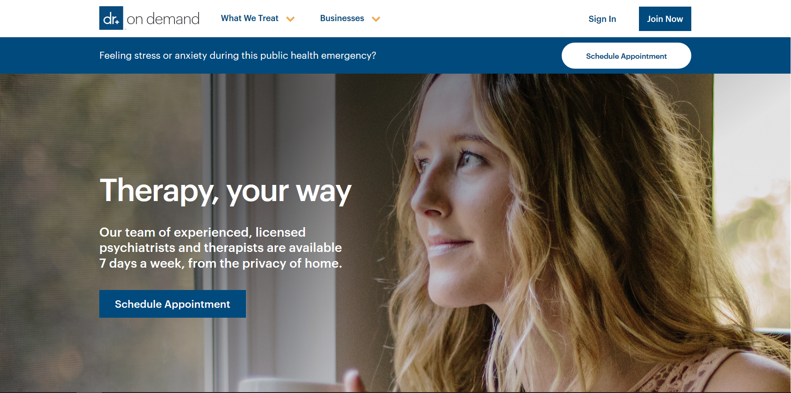
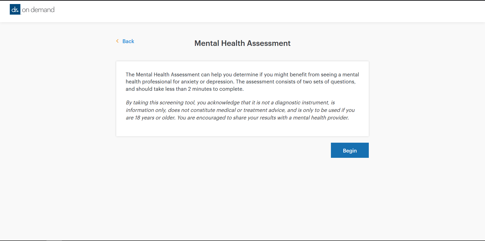
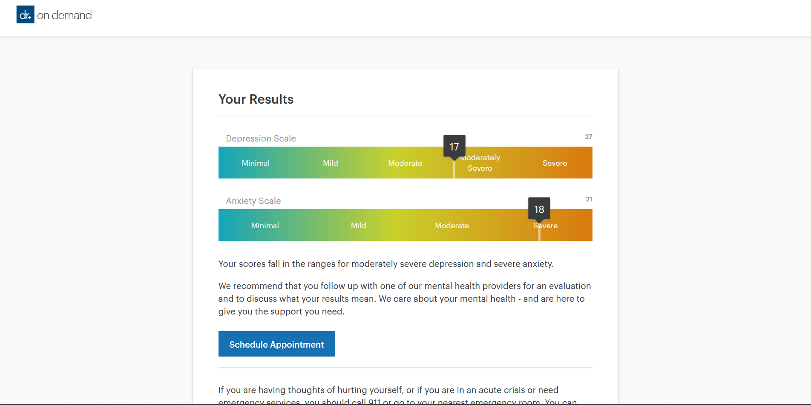
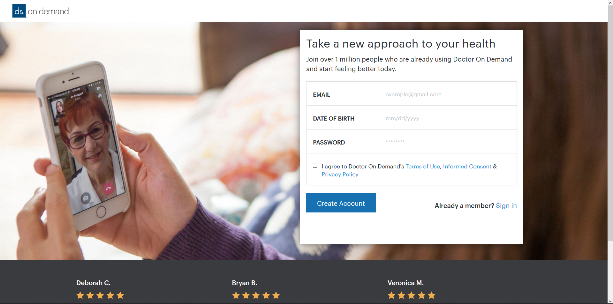

/doctorondemand2-1cb8d102b5a64adf896c7720bf993760.png)
Click Logo above to go to the website
Doctor On Demand’s mental health practice isn’t confined to business hours, Monday through Friday. Choose from a variety of therapists with different backgrounds and specialties, available when you are. From talk therapy to medication management, we’re here to support your full mental wellbeing.
1. Be Prepared and Realize your feelings. Scroll down and learn from the information. Now click on Free Mental Health Assessment
2. Take the survey and try to answer each question honestly
3. Once you finished the survey. Look At Your Results. Just a Example Above. If you want therapy, then click on Schedule Appointment. And create your Account.
4. Once you have your Account, follow the instructions and proceed to the checkout